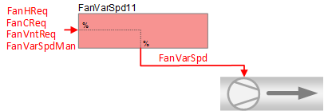
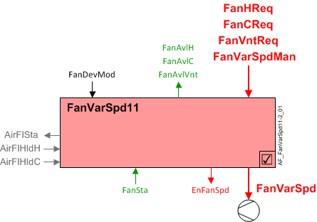

变速风扇（FanVarSpd11）
 | 该应用程序功能操作一个variable speed fan. 可变风扇速度是根据加热、冷却或通风的请求信号计算的。 也可以通过房间操作单元进行手动输入。 此应用功能通常配置用于风机盘管机组。还可以支持串联或并联风扇供电的 VAV 箱或热泵。 风扇状态有一个可选的二进制输入。 另一个可选的二进制输出可用于启用风扇运行。 该应用程序函数 NOT 可用于： |
Required elements and how to configure them:
元素 | I/O | 信号类型 |
|---|---|---|
FanVarSpd "Variable speed fan" | On-board output, Fan speed | Variable speed 0...10V |
Function
下图显示了与此应用程序函数关联的 BACnet 对象。主要信号流程总结如下：
收到风扇请求信号（FanVntReq / FanCReq / FanHReq）并处理成风扇速度的模拟输出信号（FanVarSpd).
基本功能：接受来自关联房间控制器的请求信号并通过设备模式逻辑开关传递；将结果作为命令输出到控制设备的 BACnet 对象。

| 命令或请求（或相关） |
| 条件或状态或可用性的通知 |
| 设备模式 |
| 互锁（内部信号，不是 BACnet 对象；有关其他信息，请参阅互锁部分） |


Interlocks
房间自动化联锁是协调 HVAC 设备之间交互的内部信号。它们在 ABT 站点或 Web 界面中不可见，但与它们关联的参数可见。有关影响联锁功能的参数的提示，请参阅注释列。
信号 | 类型 | 方向 | 描述 | 评论 |
|---|---|---|---|---|
AirFlCReq | 布尔值 | In | 气流冷却要求 |
|
AirFlHReq | 布尔值 | In | 气流加热要求 |
|
AirFlDhuReq | 布尔值 | In | 风量除湿要求 |
|
AirFlVntReq | 布尔值 | In | 气流通风要求 |
|
AirFlHldC | 布尔值 | In | 保持气流以进行冷却 |
|
AirFlHldH | 布尔值 | In | 保持气流以供加热 |
|
AirFlSta | 布尔值 | 出去 | 气流状态 | 有关名为“...AirFlSta”的参数，请参阅配置部分。 |
AirFlVavReq | % | In | 空气流量 vav 请求 | 风扇供电盒应用。 |
FanManOff | 布尔值 | 出去 | 风扇手动关闭 |
|
Ventilation request- 什么时候FanDevMod是 ”Control mode“风扇可用于通风请求（FanAvlVnt= 是的）。当有通气请求时（FanVntReq）大于4%，FanVarSpd等于或大于FanAirFlMinVnt以测量的空气流量单位表示。 （关闭风扇的关闭滞后为 2%）
如果设备模式不是Control mode, FanVntReq没有影响。
Note
此功能可确保在很少或没有加热或冷却需求时（例如温度排序期间的中性区），风扇可以提供最小的通风气流。
Fan heating available status- FanAvlH 将等于“是”，如果FanDevMod是 ”Control mode" 并且气流加热请求的内部信号处于活动状态（真）。
Fan cooling available status- FanAvlC 将等于“是”，如果FanDevMod是 ”Control mode" 并且气流冷却请求的内部信号处于活动状态（真）。
Configuration
 Objects
Objects
描述 | 目的 | 类型 | 默认值 |
|---|---|---|---|
Maximum fan speed for cooling | FanSpdMaxC | ACnfVal | 100 [%] |
Minimum fan speed for cooling | FanSpdMinC | ACnfVal | 50 [%] |
Maximum fan speed for heating | FanSpdMaxH | ACnfVal | 100 [%] |
Minimum fan speed for heating▶ 通过 CHAR_LIN 缩放加热的最小风扇速度（百分比），以根据风扇加热请求信号提供最小加热（FanHReq). | FanSpdMinH | ACnfVal | 50 [%] |
Maximum fan speed for ventilation | FanSpdMaxVnt | ACnfVal | 100 [%] |
Minimum fan speed for ventilation | FanSpdMinVnt | ACnfVal | 50 [%] |
Fan speed for dehumidification | FanSpdDhu | ACnfVal | 50 [%] |
Fan start speed by fan-powered box | FanSttSpdFpb | ACnfVal | 50 [%] |
Fan end speed by fan-powered box | FanEndSpdFpb | ACnfVal | 100 [%] |
VAV end air volume flow | VavAirFlEnd | ACnfVal | 100 [] 1), 2) |
1) 值取为 [m3/h] 用于与压力无关的 VAV 控制
2) 对于压力相关的 VAV 控制，值被视为 [%]
 Parameters
Parameters
描述 | 范围 | 默认值 |
|---|---|---|
Enable state input | EnStaIn | 0:No |
Interlocks | ||
Switch-on point for air volume flow state | SwiOnAirFlSta | 4 [%] |
Hysteresis for air volume flow state | HysAirFlSta | 2 [%] |
Switch-on delay for air volume flow state | DlyOnAirFlSta | 30 [s] |
Enable fan operation before heating coil 0: No | EnFanOpBfHcl | 0:No |
Interface
界面 | 描述 | 类型 | 参考号 | 拥有者 |
|---|---|---|---|---|
FanVarSpd | Variable speed fan | AO | ◉ | Room segment / Device |
EnFanSpd | Enable fan speed | BO | ◉ | Room segment / Device |
FanSta | Fan state Note | BI
| ◉ | Room segment / Device |
FanVarSpdMan | Manual variable speed fan | APrcVal | ● | - |
FanDevMod | Fan device mode 1:Off | MPrcVal | ● | - |
FanCReq | Fan cooling request | ACalcVal | ● | - |
FanHReq | Fan heating request | ACalcVal | ● | - |
FanVntReq | Fan ventilation request | ACalcVal | ● | - |
FanAvlC | Fan available for cooling 0:No | BCalcVal | ● | - |
FanAvlH | Fan available for heating 0:No | BCalcVal | ● | - |
FanAvlVnt | Fan available for ventilation 0:No | BCalcVal | ● | - |
FanSpdMaxC | Maximum fan speed for cooling | ACnfVal | ● | - |
FanSpdMinC | Minimum fan speed for cooling | ACnfVal | ● | - |
FanSpdMaxH | Maximum fan speed for heating | ACnfVal | ● | - |
FanSpdMinH | Minimum fan speed for heating | ACnfVal | ● | - |
FanSpdMaxVnt | Maximum fan speed for ventilation | ACnfVal | ● | - |
FanSpdMinVnt | Minimum fan speed for ventilation | ACnfVal | ● | - |
FanSpdDhu | Fan speed for dehumidification | ACnfVal | ● | - |
VavAirFlEnd | VAV end air volume flow | ACnfVal | ● | - |
FanSttSpdFpb | Fan start speed by fan-powered box | ACnfVal | ● | - |
FanEndSpdFpb | Fan end speed by fan-powered box | ACnfVal | ● | - |
Engineering and commissioning
范围EnStaIn如果使用二进制风扇状态输入，则必须设置为 1：是。